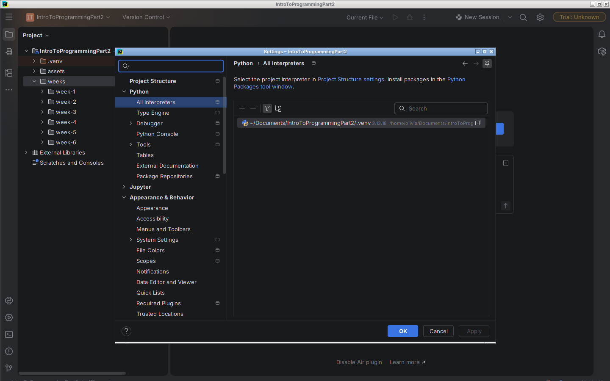
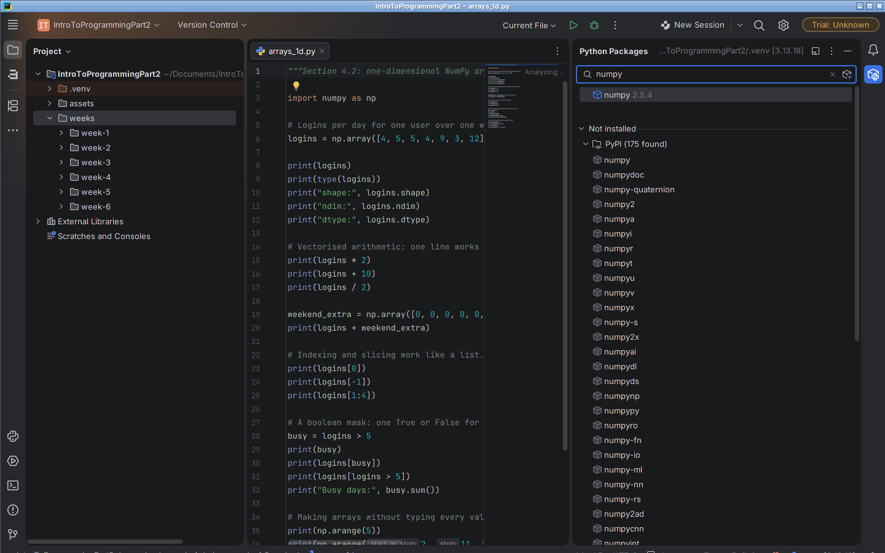
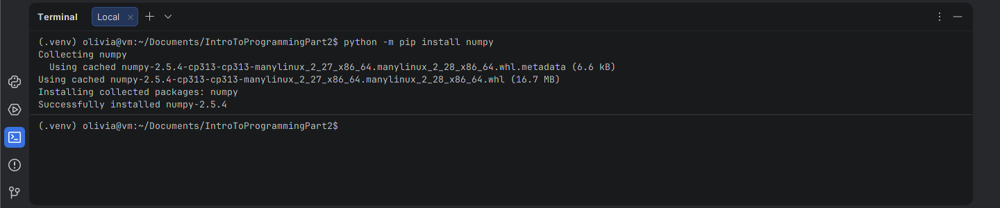

Week 4: Libraries and NumPy
Last updated on 2026-11-12 | Edit this page
Overview
Questions
- What will I learn in Week 4, and how should I spend my 6 hours?
- How do I add a library to Python?
- Why does each project need its own virtual environment?
- What is a NumPy array?
- How do I work on a whole column of numbers at once?
- How do I summarise numbers and find unusual ones?
- When is an array a better tool than a list?
- Can I find unusual values with NumPy?
Objectives
- Plan your study time for the week using the time plan.
- Create a virtual environment in PyCharm.
- Install a package with pip and list what is installed.
- Create arrays and read their shape and dtype.
- Use arithmetic on whole arrays.
- Pick values with indexes, slices and boolean masks.
- Calculate the mean, median and standard deviation.
- Use axis to work by column or by row.
- Calculate a z-score and explain what it shows.
- Explain why an array is faster for large numeric data.
- Judge when a list and a loop are the better choice.
- Calculate user statistics and flag unusual login counts with a z-score.
Week 4 overview
Theme: install a library into a private virtual environment, use NumPy arrays to work on a whole table of numbers at once, and decide when an array suits a problem better than a list and a loop.
What you need from earlier weeks: reading CSV files
with the csv module and using pathlib.Path
(Week 2), f-string formatting (Week 1), and basic validation habits
(Week 3). pip, virtual environments and NumPy are all new this week.
Learning goals
By the end of this week you can:
- Explain what a virtual environment is, and install a package with pip in PyCharm.
- Make NumPy arrays, then index, slice and filter them, and do arithmetic on a whole array at once.
- Work out the mean, median and standard deviation of data, and use a z-score to find values that are unusual.
- Judge when a plain list and loop is the better choice and when an array is, and say why (LO 4).
Time plan (under 6 hours)
| Block | Time | What you do |
|---|---|---|
| Watch | 34 min | Three videos (below) |
| Read & practise | 1 h 45 m | Sections 4.1 to 4.3, with Level 1 exercises |
| Concepts Bridge | 30 min | Why arrays are faster than lists |
| Build | 2 h | Login statistics with a z-score check, your portfolio item for this week |
| Quiz | 15 min | Canvas quiz, 6 questions |
| Total | 5 h 4 min | Under the 6 h cap |
Watch (34 min)
Watch these in order. Pause and try the code yourself in PyCharm. The videos are from different presenters, so the style changes from video to video.
| # | Video | Length | Look out for |
|---|---|---|---|
| 1 | [Max Rohowsky] PyCharm Virtual Environments (venv) Explained! | 10:46 | What a virtual environment is, and where to see it in PyCharm. |
| 2 | [Tech With Tim] Numpy Tutorial - Introduction to Arrays in Python | 11:16 | How an array differs from a list, and what shape
means. |
| 3 | [ProgrammingKnowledge] Python NumPy Tutorial For Beginners - Numpy Mean, Median, Mode, Standard Deviation in Python | 11:18 | What the mean, median and standard deviation each tell you about a set of values. You can skip the mode. |
Total: 33 min 20 s, shown as 34 min.
Read & practise (1 h 45 m)
Open each lesson, read it, type out the examples and run them. Do not just copy and paste.
Section 4.1: pip and virtual environments (30 min)
Lesson: Section 4.1. Code: check_numpy.py.
- Read the whole section. Install
numpyin your project’s virtual environment as you go. - Do the Level 1 exercises (1 to 5).
Section 4.2: NumPy arrays (40 min)
Lesson: Section 4.2. Code: arrays_1d.py, arrays_2d.py.
- Read the whole section and type out the examples.
- Do the Level 1 exercises (1 to 5).
Section 4.3: Statistics with NumPy (35 min)
Lesson: Section 4.3. Code: statistics_basics.py, z_scores.py.
- Read the whole section. Work through the standard deviation example by hand first.
- Do the Level 1 exercises (1 to 6).
The three sections add up to 30 + 40 + 35 = 105 minutes.
PyCharm note: you install numpy this
week. You will install pandas in Week 5 and
matplotlib in Week 6 in the same way.
Concepts Bridge (30 min)
Go to the Concepts Bridge. It explains why arrays are faster than lists, shows a small timing test, and gives a table for choosing between a list and an array (LO 4). It has two short activities.
Build (2 h)
Go to the practice task. You read a table of login counts into a NumPy array, work out statistics for each user, and flag unusual counts with z-scores. You also write a short note that compares a loop with an array method. This is your portfolio item for Week 4.
Quiz (15 min)
Take the Canvas quiz for Week 4 after you finish the Build. It has 6 questions, drawn from a pool. It is marked automatically.
Portfolio this week
Submit at the end of the week, in your portfolio folder:
-
starter.py(your completed code) -
method_note.txt(five or six sentences comparing the loop and the array method, and saying what the z-score check found)
Your tutor marks the portfolio. The quiz is marked automatically.
Optional
Only if you have time and are curious.
- Sections 4.1, 4.2 and 4.3 Level 2 exercises.
- NumPy Developers (2026) NumPy: the absolute basics for beginners. Available at: https://numpy.org/doc/stable/user/absolute_beginners.html (Accessed: 11 November 2026).
- Python Packaging Authority (2026) Python Packaging User Guide. Available at: https://packaging.python.org (Accessed: 11 November 2026).
4.1 pip and virtual environments
Why this matters
So far, every module you imported came with Python:
math, random, csv,
json, hashlib. Most data and security work
also uses tools that other people wrote and shared. A data analyst uses
them to work on a million rows at once. A security analyst uses them to
summarise a log and draw a chart for a report.
These tools do not come with Python. You have to install them. This section shows you how to do that safely and tidily, so you always know what is installed and where.
The standard library and third-party packages
The standard library is the set of modules that is installed together with Python. You can import any of them straight away.
OUTPUT
7.0A package is a bundle of Python code that somebody has prepared so that other people can install it. A third-party package is a package that is not part of the standard library. “Third-party” just means it was written by someone other than you or the Python team. NumPy is a third-party package.
If you try to import a third-party package that is not installed, Python stops with an error:
OUTPUT
ModuleNotFoundError: No module named 'numpy'This error does not mean your code is wrong. It means the package is not installed in the place Python is looking.
Most third-party packages are published on PyPI, the Python Package Index (https://pypi.org). PyPI is a public website that stores packages so that anyone can download them. The tool that downloads a package from PyPI and installs it is called pip. pip comes with Python, so you already have it.
| Standard library | Third-party package | |
|---|---|---|
| Examples |
math, csv, json,
hashlib
|
numpy, pandas,
matplotlib
|
| Comes with Python? | Yes | No |
Needs pip install? |
No | Yes |
| Where it comes from | The Python team | Other people and organisations, usually through PyPI |
What a virtual environment is
A virtual environment is a private folder of packages that belongs to one project. When you install a package into it, only that project can see the package.
Why not install everything in one shared place? There are two reasons.
- Projects do not clash. Suppose an old project needs an old version of a package, and a new project needs the newest version. With one shared place, you can only have one version, so one project breaks. With a virtual environment each, both projects keep working.
- You know exactly what is installed. The folder holds only what this project needs. You can list it, and you can give that list to another person so their copy of the project works the same way as yours.
Think of it like a toolbox for each job. The plumber’s toolbox and the electrician’s toolbox hold different tools, and nobody has to dig through one giant pile.
Finding your virtual environment in PyCharm
When you create a new project, PyCharm offers to create a virtual
environment for it. By default it is a folder called .venv
inside the project folder. You do not need to open this folder or edit
anything in it. PyCharm and pip look after it.
To see which environment your project uses:
- Open Settings. On Windows and Linux this is File > Settings. On macOS it is PyCharm > Settings.
- Choose Python > All Interpreters. In older PyCharm versions this page is Project: (your project name) > Python Interpreter.
- Look at the list. The interpreter is the Python
program that runs your code. Its path should end with
.venvand the name of your project should be in it. Older versions also show a table of the installed packages on this page. Newer versions list the packages in the Python Packages tool window, described below.

.venv interpreter of the
projectIf the interpreter line says No interpreter, click
Add Interpreter > Add Local Interpreter, choose
Virtualenv Environment and New, and
click OK. PyCharm then creates the .venv
folder for you. The exact wording of these buttons changes a little
between PyCharm versions.
PyCharm also has a Python Packages tool window. Open it with View > Tool Windows > Python Packages. It lists the installed packages and lets you search PyPI for new ones.

numpy typed in the search box. It shows numpy as installed,
and the matching packages on PyPIInstalling NumPy with pip
You will install packages by typing a command, because the same command works on every computer.
- Open the Terminal tool window in PyCharm. It is at the bottom of the window, or under View > Tool Windows > Terminal. The terminal is a place to type commands for the computer, not Python code.
- Look at the start of the line where you type. It should begin with
(.venv). That tells you the terminal is using the virtual environment of your project. - Type this command and press Enter:
OUTPUT
python -m pip install numpy
(.venv) prompt and the command
python -m pip install numpy with its “Successfully
installed” lineThe command has four parts:
| Part | Meaning |
|---|---|
python |
Run the Python that belongs to this environment. |
-m pip |
Run the module called pip. |
install |
The job you want pip to do. |
numpy |
The name of the package on PyPI. |
Writing python -m pip instead of just pip
makes sure that the package goes into the same Python that runs your
code.
pip prints a few lines while it downloads. The last line looks something like this. Your version number may be different.
OUTPUT
Successfully installed numpy-2.5.4Now test it. Create a new Python file, type these lines and run it:
OUTPUT
NumPy version: 2.5.4If you see a version number, NumPy is ready. The file 4.1_code/check_numpy.py does the same check with a little more detail.
You install NumPy once for each project, not each time you run a
program. This week you install numpy. You will install
pandas in Week 5 and matplotlib in Week 6 in
exactly the same way.
Checking what is installed
Two more pip commands are useful. Type them in the Terminal.
pip list shows every package in the environment, with
its version:
OUTPUT
python -m pip listOUTPUT
Package Version
------- -------
numpy 2.5.4
pip 25.3Your list and your version numbers will differ. You may also see a few packages that you did not ask for. Some packages need other packages to work, and pip installs those for you.
pip show gives details about one package:
OUTPUT
python -m pip show numpyOUTPUT
Name: numpy
Version: 2.5.4
Summary: Fundamental package for array computing in Python
Home-page: https://numpy.orgThere are more lines than this. The useful ones are the name, the version, the summary and where the package is stored.
The requirements file
A requirements file is a plain text file, usually
called requirements.txt, that lists the packages a project
needs, one name on each line. Another person can then install everything
in one step with python -m pip install -r requirements.txt.
You do not have to write one this week, but you will see this file in
many projects, and now you know what it is for.
A safety habit
A package is code that runs on your computer, so install only well-known packages that your course, your workplace or a trusted source tells you to use. Check the spelling of the name before you press Enter, because a wrong name can install a different package from the one you meant.
Common mistakes
-
Typing the command in the wrong place.
python -m pip install numpygoes in the Terminal. It is not Python code. If you type it in a.pyfile you get aSyntaxError. -
Installing into a different environment. If the
Terminal line does not start with
(.venv), or the interpreter in Settings is not the one for this project, the package goes somewhere else andimport numpystill fails. Check the interpreter in Settings first. -
Naming your own file
numpy.py. Python then imports your file instead of the real package, and you get strange errors. Never give a file the same name as a module you import. The same goes forcsv.py,random.pyandjson.py. -
Installing again and again. One install per project
is enough. If pip says
Requirement already satisfied, the package is already there. -
Mixing up the two names. Sometimes the name you
install is not the name you import. For the three packages in this
course they are the same:
numpy,pandasandmatplotlib.
Exercises: Level 1
Budget about 3 minutes for each exercise.
- Open Settings > Project > Python Interpreter
in your PyCharm project. Write down the path of the interpreter. Does it
contain
.venv? - In the PyCharm Terminal, run
python -m pip install numpy. Then runpython -m pip list. Write down the version of NumPy you have. - Run
python -m pip show numpy. Find the Summary line and the Location line. In one sentence, say what the Location line tells you. - Sort these modules into two groups, “standard library” and
“third-party”:
json,numpy,hashlib,pandas,csv,matplotlib,math. - In two sentences of your own, explain to a workmate why each project has its own virtual environment.
Exercises: Level 2
Optional.
- Create a file called
requirements.txtin your project with one line,numpy. Runpython -m pip install -r requirements.txtin the Terminal. Read what pip prints, and explain why it did not download anything. - Open the Python Packages tool window and search for
pandas. Read the description that PyCharm shows. Do not install it yet. Which organisation or project publishes it? - Run
python -m pip --versionin the Terminal. The line it prints includes a folder path. What does that path tell you about which environment pip belongs to?
4.2 NumPy arrays
Why this matters
A security analyst might have a count of logins for every user on every day of a month. A data analyst might have thousands of prices. In both cases you want to ask questions such as “which counts are above 5?” or “what is every value in dollars instead of cents?”
With a plain list you write a loop for each question. NumPy lets you ask the question about the whole collection in one line. This section shows you how. Make sure you installed NumPy in Section 4.1 first.
Importing NumPy and making an array
NumPy is nearly always imported with a short nickname,
np. Everybody who uses NumPy does this, so you will see it
in every example you read.
as np means “call it np in this file”. An
array is NumPy’s collection of numbers. You make one
from a list with np.array.
OUTPUT
[ 4 5 5 4 9 3 12]
<class 'numpy.ndarray'>Notice that the array prints without commas. The type is
numpy.ndarray. The name stands for “n-dimensional
array”.
All the examples in this section are in 4.2_code/arrays_1d.py and 4.2_code/arrays_2d.py. Type them out and run them.
Shape, ndim and dtype
Every array has three facts you can look up.
OUTPUT
shape: (7,)
ndim: 1
dtype: int64-
shape is a tuple that gives the size in each
direction.
(7,)means one direction with 7 items. - ndim is the number of directions (dimensions). A flat row of numbers has 1. A table has 2.
-
dtype is the data type of the items.
int64means whole numbers stored in 64 bits. An array holds only one dtype. If you mix whole numbers and decimals, NumPy turns every item into a decimal (float64). The exact dtype on your computer may be different, for exampleint32on some systems. That is fine.
Arithmetic on a whole array
Here is the idea that makes NumPy useful. Arithmetic works on every item at once.
OUTPUT
[ 8 10 10 8 18 6 24]
[14 15 15 14 19 13 22]
[2. 2.5 2.5 2. 4.5 1.5 6. ]Working on a whole array in one step is called vectorised arithmetic. The word comes from “vector”, another name for a one-dimensional list of numbers. You do not write the loop. NumPy does it for you.
You can also combine two arrays of the same shape. The items are paired up by position.
OUTPUT
[ 4 5 5 4 9 5 14]Compare this with lists. [1, 2, 3] + [10, 20, 30] joins
two lists into one list of six items.
np.array([1, 2, 3]) + np.array([10, 20, 30]) adds item by
item and gives [11 22 33]. The same symbol does two
different jobs, so always check which type you have.
Indexing and slicing in one dimension
Indexing and slicing work just like lists.
OUTPUT
4
12
[5 5 4]logins[1:4] gives the items at positions 1, 2 and 3. The
stop position (4) is not included, as with lists.
Two-dimensional arrays
A table of numbers is a two-dimensional array. You make it from a list of lists. Each inner list is one row. A column is made of the item at the same position in every row.
PYTHON
table = np.array([
[4, 8, 1, 6],
[5, 5, 3, 9],
[5, 5, 2, 7],
])
print(table)
print("shape:", table.shape)OUTPUT
[[4 8 1 6]
[5 5 3 9]
[5 5 2 7]]
shape: (3, 4)The shape (3, 4) means 3 rows and 4 columns. Here the
rows are days and the columns are users.
To pick one cell, give the row and then the column, separated by a
comma: table[row, col]. Counting starts at 0.
OUTPUT
8
7To pick a whole row or a whole column, use a slice. A lone colon
: means “everything in this direction”.
OUTPUT
[5 5 3 9]
[4 5 5]
[6 9 7]
[[1 6]
[3 9]]Read table[:, 0] as “all rows, column 0”. That is the
first user’s count for every day. The last line takes rows 0 and 1, and
columns 2 and 3.
Boolean masks
A comparison on an array gives an array of True and
False values, one for each item. This is called a
boolean mask.
OUTPUT
[False False False False True False True]Use the mask inside square brackets to keep only the items where it
is True.
OUTPUT
[ 9 12]
[ 9 12]
Busy days: 2The second line is the usual way to write it. The third line shows a
handy trick: True counts as 1 and False as 0,
so .sum() on a mask counts how many items matched. Masks
also work on tables, and the result is a flat array of the matching
items.
OUTPUT
[[False True False True]
[False False False True]
[False False False True]]
[8 6 9 7]You can put in >=, <, ==
and != as well.
Making arrays with arange and zeros
You do not always want to type every value.
PYTHON
print(np.arange(5))
print(np.arange(2, 11, 2))
print(np.zeros(4))
print(np.zeros(4, dtype=int))OUTPUT
[0 1 2 3 4]
[ 2 4 6 8 10]
[0. 0. 0. 0.]
[0 0 0 0]-
np.arangeworks likerange.np.arange(2, 11, 2)starts at 2, stops before 11 and steps by 2. The result is an array. -
np.zerosmakes an array full of zeros. By default these are decimals (0.). Adddtype=intfor whole numbers. - For a table, give the shape as a tuple:
np.zeros((2, 3), dtype=int)makes 2 rows and 3 columns of zeros. You can then fill in a cell withblank[0, 1] = 7.
Common mistakes
-
Forgetting
import numpy as np. You getNameError: name 'np' is not defined. -
Using
table[0][1]andtable[0, 1]as if they were different. Both work on arrays, buttable[0, 1]is the NumPy style and it is the one you should use. Slicing liketable[:, 0]only works with the comma style. -
Adding arrays of different shapes.
np.array([1, 2, 3]) + np.array([1, 2])fails with aValueErrorthat says the shapes could not be broadcast together. The two arrays must have matching shapes. -
Expecting an array to hold mixed types.
np.array([1, "a"])turns the number into text. Keep an array to numbers only.
Exercises: Level 1
Budget about 3 minutes for each exercise. Use this array in tasks 1
to 3: times = np.array([20, 22, 19, 21, 95, 23]) (response
times in milliseconds).
- Print the
shape,ndimanddtypeoftimes. Say what each one tells you. - Print
timesin seconds (divide by 1000). Does the originaltimeschange? - Make a mask for times above 50. Print the mask, then print the matching times, then print how many there are.
- Make this table, with days as rows and users as columns:
[[3, 7, 2], [4, 6, 9], [5, 5, 1]]. Print the cell for the second day and third user. Print the whole second column. - Use
np.arangeto make the array[0, 5, 10, 15, 20]. Then usenp.zerosto make a table of zeros with 3 rows and 2 columns, made of whole numbers.
Exercises: Level 2
Optional.
- Using the table from task 4, print only the values that are 5 or more.
- Multiply the table from task 4 by
np.array([1, 2, 3]). Print the result and describe in a sentence what NumPy did. (This is called broadcasting. You do not need to know the word yet.) - Make
np.arange(1, 13)and look up thereshapemethod in the NumPy documentation. Turn it into a table of 3 rows and 4 columns.
4.3 Statistics with NumPy
Why this matters
Suppose one account downloads far more data than usual, or one user logs in far more often than usual. How do you decide what “far more” means? You compare the value with that account’s normal pattern. Statistics gives you simple numbers for the normal pattern, and a way to measure how far a value is from it.
This section uses NumPy to work out those numbers. The Build this week uses them to look for unusual login counts. Code for this section is in 4.3_code/statistics_basics.py and 4.3_code/z_scores.py.
Sum, mean, median, min, max and argmax
Here are response times in milliseconds for eight requests to a web page. One of them is very slow.
PYTHON
import numpy as np
times = np.array([20, 22, 19, 21, 20, 23, 95, 20])
print("sum: ", times.sum())
print("mean: ", times.mean())
print("median:", np.median(times))
print("min: ", times.min())
print("max: ", times.max())
print("argmax:", times.argmax())OUTPUT
sum: 240
mean: 30.0
median: 20.5
min: 19
max: 95
argmax: 6- The mean is the total divided by the count. It is the usual meaning of “average”.
- The median is the middle value when the numbers are sorted. With an even count, it is halfway between the two middle values. Here those are 20 and 21.
-
argmax gives the position of the biggest
value, not the value itself. The 95 is at position 6. There is also
argminfor the smallest.
Notice that the one slow request pulls the mean up to 30, while the
median stays near 20. When a few values are extreme, the median often
describes a typical value better. Most functions can be written two
ways: times.mean() or np.mean(times). Both do
the same thing. median is only written as
np.median(times).
Standard deviation
The standard deviation is a measure of spread. It tells you how far values typically sit from the mean. A small standard deviation means the values are close together. A large one means they are spread out.
This course uses the population standard deviation,
which is what np.std gives by default. Here is how to work
it out by hand for the values 2, 4, 4 and 6.
- Find the mean: (2 + 4 + 4 + 6) / 4 = 4.
- Subtract the mean from each value: -2, 0, 0, 2.
- Square each difference: 4, 0, 0, 4. (Squaring makes every number positive.)
- Find the mean of those squares: (4 + 0 + 0 + 4) / 4 = 2.
- Take the square root: the square root of 2 is about 1.41.
NumPy does all five steps for you:
OUTPUT
np.std: 1.4142135623730951You can follow the steps in NumPy too. 4.3_code/statistics_basics.py does that. Read it and compare it with the steps above.
Axis: down the columns or along the rows
On a table, sum, mean, max and
the rest can work on the whole table, down each column, or along each
row. You choose with axis.
PYTHON
table = np.array([
[4, 8, 1, 6],
[5, 5, 3, 9],
[5, 5, 2, 7],
])
print("whole table:", table.sum())
print("axis=0:", table.sum(axis=0))
print("axis=1:", table.sum(axis=1))OUTPUT
whole table: 60
axis=0: [14 18 6 22]
axis=1: [19 22 19]-
axis=0works down the rows, so you get one answer for each column. With days as rows and users as columns, that is one answer per user. -
axis=1works along each row, so you get one answer for each row. That is one answer per day.
A way to remember it: the axis you name is the one that disappears. A
table of shape (3, 4) summed with axis=0
leaves shape (4,). Summed with axis=1 it
leaves (3,).
PYTHON
print("mean per user:", table.mean(axis=0))
print("max per day:", table.max(axis=1))
print("busiest day position:", table.sum(axis=1).argmax())OUTPUT
mean per user: [4.66666667 6. 2. 7.33333333]
max per day: [8 9 7]
busiest day position: 1The last line first adds up each day ([19 22 19]), then
asks for the position of the biggest total. That is position 1, the
second day.
The z-score
How far from normal is a value? The z-score answers in a unit that works for any data:
OUTPUT
z = (value - mean) / stdA z-score is “how many standard deviations the value is from the mean”. A z-score of 0 means exactly the mean. A z-score of 2 means two standard deviations above. A z-score of -2 means two below.
A common rule of thumb says that a z-score with an absolute value above 3 (written |z| > 3) is unusual. In many data sets, values this far from the mean are rare. This is only a rule of thumb. Some teams use 2 or 2.5.
Because NumPy is vectorised, one line gives a z-score for every value. Here are the megabytes downloaded by one account on each of ten days.
PYTHON
downloads = np.array([50, 52, 48, 51, 49, 50, 53, 47, 50, 120])
mean = downloads.mean()
std = downloads.std()
z = (downloads - mean) / std
print(f"mean = {mean:.1f}, std = {std:.2f}")
print(np.round(z, 2))OUTPUT
mean = 57.0, std = 21.07
[-0.33 -0.24 -0.43 -0.28 -0.38 -0.33 -0.19 -0.47 -0.33 2.99]Now use a mask to find the values with a large |z|.
np.abs gives the absolute value of every item.
OUTPUT
Flagged values: [120]A caution about unusual values
Look again at that example. The 120 has a z-score of 2.99, which is just under 3. The rule of thumb would not flag it, yet it is more than double every other day.
The reason is that an extreme value pulls the mean and the standard deviation towards itself. The mean rose from 50.0 to 57.0 and the standard deviation grew from 1.76 to 21.07. A bigger standard deviation makes every z-score smaller. With only ten values, one huge value can partly hide itself. The z-score is still useful, but it is a tool, not a verdict.
Also remember that unusual is not the same as wrong or malicious. A user might log in 41 times in a day because a script ran by mistake, a shared account was used, a system was tested, or because someone really did something suspicious. The z-score cannot tell you which. It is a prompt to look closer. A person should check the logs around that time before drawing a conclusion.
Common mistakes
-
Mixing up the axes. If you get one answer per user
when you wanted one per day, swap
axis=0andaxis=1. Check theshapeof the result. -
Forgetting that
argmaxgives a position. To get the matching date, use that position to index a list of dates. -
Dividing by a standard deviation of 0. If every
value is the same,
stdis 0 and the z-score is not defined. NumPy givesnanorinfand prints a warning. - Trusting 3 as a law. It is a rule of thumb. Small data sets and extreme values can break it.
- Calling a flagged value an attack. It is a value to investigate.
Exercises: Level 1
Budget about 3 minutes for each exercise.
- For
np.array([3, 8, 1, 9, 6]), print the sum, mean, median and standard deviation. Check the mean by hand. - Using the same array, print
argmax()and the value at that position. Then printargmin(). - Work out the population standard deviation of
[1, 3, 5, 7]by hand, using the five steps. Write each step down. Then check withnp.std. - Make
table = np.array([[1, 2, 3], [4, 5, 6]]). Print the sum of each column and the sum of each row. Whichaxisis which? - Make
np.array([10, 20, 30, 40]). Work out the z-score of every value, using vectorised arithmetic. Print them rounded to 2 places. Why is the middle pair symmetrical, one negative and one positive? - Make
np.array([12, 15, 11, 40, 13]). Find the values with |z| above 1.5. Then add a sentence of your own about what you would do next with a flagged value.
Exercises: Level 2
Optional.
- Take the array in task 6 and remove the 40. How do the mean and standard deviation change?
- Make a table of 5 rows and 3 columns of your own numbers. Print the
z-scores of each column, using
axis=0to get the means and standard deviations. - Read the NumPy documentation for
np.stdand find out what theddofargument does. This course does not use it.
Concepts Bridge: Why Arrays Are Faster than Lists
Time: 30 minutes. Reading 12 minutes, running the timing code 5 minutes, activities 8 minutes, checking the model answer 5 minutes.
Why this matters
LO 4 asks you to judge which tool or method suits a problem. This week you have two tools for a list of numbers: a plain Python list with a loop, and a NumPy array. Neither is always better. A good analyst can say which to use, and why. This bridge explains what is different inside each one, shows a small timing test, and gives you a way to decide.
What is different inside
| Python list | NumPy array | |
|---|---|---|
| What it holds | References (pointers) to separate objects, which can be any type | One block of numbers, all the same type |
| Mixed types? | Yes: [1, "a", 2.5]
|
No: everything becomes one dtype |
| Adding an item | Easy and cheap: append
|
Awkward: the size is fixed, so NumPy makes a new array |
| Maths on every item | You write a for loop |
One expression, such as a * 2
|
| Where the loop runs | Line by line in Python | In compiled code (code already translated to run fast on the machine) |
A list is like a shelf of labelled boxes, where each box can hold anything and the labels point to other places. An array is like one long tray of identical slots. The tray is packed tightly, so the computer can move along it quickly. That is the first reason arrays are fast.
The second reason is about the loop. When you write
for number in numbers:, Python reads and carries out your
instructions one line at a time, for every item. When you write
np.sum(numbers_array), the loop runs inside NumPy’s
compiled code, which does not have the line-by-line cost.
A small timing test
The file bridge_code/timing_comparison.py
adds up the numbers from 0 to 999,999 in three ways: a for
loop, the built-in sum() on a list, and
np.sum() on an array. It measures each one with
time.perf_counter(). This function gives the current time
in seconds, so the difference between the time before and after a job is
how long the job took.
Type it out and run it in PyCharm. Here is typical output. Your numbers will differ, and they will change from one run to the next.
OUTPUT
Totals: 499999500000 499999500000 499999500000
for loop: 0.0677 seconds
sum(): 0.0059 seconds
np.sum(): 0.0009 secondsAll three give the same total. Timing depends on your computer, what else it is doing and the version of Python and NumPy. Do not quote an exact “times faster” number as a fact. What you can say is that on a large set of numbers, the array version is usually much quicker than the plain loop.
Also notice what the test does not show. Making the array from a list takes time too. If you only add up a handful of numbers, the saving is too small to matter.
Choosing: list or array?
Use this table to judge a problem.
| Question | A list and a loop is better when… | An array is better when… |
|---|---|---|
| How much data? | There are a few dozen items | There are thousands or millions of items |
| What types? | The items are mixed (names, numbers, dates) | Every item is a number of the same kind |
| How does the data grow? | You add one item at a time as you go | You have all the data first, then calculate |
| What is the job? | Reading, filtering or building text | Maths on whole columns (mean, z-score, totals) |
| Who reads the code? | A short script where the loop is the clearest thing | The array line is as clear as the loop, and shorter |
Speed is only one reason. Clarity matters too.
values.mean() says what it does, and there is less room for
a mistake than in a hand-written loop. But a loop is still the right
tool when you must read a file line by line, when each item needs a
decision, or when you are only working with ten numbers.
Activity 1: choose list or array (5 minutes)
For each task, say list or array, and give one reason.
- Keep a record of the names of users as they sign in during the day, adding each one when it happens.
- Calculate the z-score of 500,000 download sizes in megabytes.
- Store a short record with a user name, a login time and a number of failed attempts.
- Convert 20,000 temperatures from degrees Celsius to degrees Fahrenheit.
Activity 1.
- List. The data grows one item at a time, and the items are text. An array is awkward to grow.
- Array. A very large amount of same-type numbers, and maths on a whole column.
- List (or a dictionary or tuple). The items are mixed types: text, a time and a number. An array holds one type.
-
Array. Large, same-type numbers, and one expression
does the job:
celsius * 9 / 5 + 32.
Activity 2.
OUTPUT
[ 4 7 10 13]
7a * 3 + 1 works on each item: 1 becomes 4, 2 becomes 7,
3 becomes 10 and 4 becomes 13. The mask a > 2 is
[False False True True], so a[a > 2] is
[3 4] and the sum is 7.
Now think about your Build this week. You write the same mean twice,
once as a loop (mean_loop) and once with an array
(user_means). Your written note compares them using the
table above.
Further reading
- Harris, C.R. et al. (2020) ‘Array programming with NumPy’, Nature, 585, pp. 357–362. Available at: https://doi.org/10.1038/s41586-020-2649-2 (Accessed: 11 November 2026).
- NumPy Developers (2026) NumPy: the absolute basics for beginners. Available at: https://numpy.org/doc/stable/user/absolute_beginners.html (Accessed: 11 November 2026).
- Python Software Foundation (2026) time — Time access and conversions. Available at: https://docs.python.org/3/library/time.html (Accessed: 11 November 2026).
Practice task: Login Statistics with a Z-Score Check
Files for this task
The easiest way to get every file is the course zip file from the Setup page. Unzip it and open the folder in PyCharm. The programs find the data files by their place in that folder, so keep the folder layout. You can also download single files here:
Time: 2 hours. This is your portfolio item for Week 4. Your tutor marks it at the end of the week.
Goal
You have a table of daily login counts: 28 days and 6 users. Your program reads it into a NumPy array, works out each user’s mean and standard deviation, finds the busiest day, and uses z-scores to list counts that are unusual for that user. You also write the mean twice, once with a loop and once with NumPy, so you can judge which tool suits the job (LO 4).
Before you start
- Make sure the project you are working in has its own virtual environment (Section 4.1).
- Open the Terminal in PyCharm. The line should start
with
(.venv). - Install the two packages this task needs:
OUTPUT
python -m pip install numpy pytest- Open
assets/data/login_counts.csvand read it. The first row is a header:date,user01,user02,user03,user04,user05,user06. There are 28 rows after it, one for each day starting on 2026-10-05. Each cell is the number of logins that user made that day. All of the data is made up for this course.
Files
| File | What it is |
|---|---|
starter.py |
Your functions to fill in, with a TODO list in each. |
test_solution.py |
Tests for the functions. |
solution.py |
A model answer. Try the task yourself before you look. |
method_note.txt |
You create this. Your written note (see below). |
starter.py finds the data file with
Path(__file__), so it runs from PyCharm whichever folder
you start it from, as long as you keep the course folder layout. If you
copy the files to another project, change COUNTS_FILE to
point at your copy of login_counts.csv.
Steps
-
(5 min) Open
starter.pyand read it. Run it. It should run and print nothing. Near the bottom, leave the twoif __name__ == "__main__":lines as they are. -
(20 min) Write
load_counts(path). Use thecsvmodule from Week 2 (not Pandas). It returns(dates, users, counts).datesis a list of 28 strings,usersis a list of 6 names, andcountsis a 2-D NumPy array of whole numbers with shape(28, 6). Check it inmain()withprint(counts.shape). -
(10 min) Write
mean_loop(values). Use a plainforloop. Do not usesum(),np.meanor.mean(). -
(15 min) Write
user_means(counts),user_stds(counts)anddaily_totals(counts). Each is one line. Decide whether you needaxis=0oraxis=1. -
(10 min) Write
busiest_day(dates, counts). It returns the date and the total for the day with the most logins. Useargmax. -
(15 min) Write
z_scores(counts). One vectorised line gives a 2-D array the same shape ascounts. Each cell is compared with the mean and standard deviation of its own column. -
(15 min) Write
unusual(dates, users, counts, threshold=3.0). It returns a list of(date, user, count, z)tuples where the absolute value ofzis above the threshold. Roundzto 2 decimal places and sort the list by date. -
(15 min) Write
main(). Print a table of each user’s mean and standard deviation, the busiest day, and the unusual values. Also print one user’s mean frommean_loopand fromuser_means, to show that they agree. - (5 min) Run the tests. Fix any that fail.
-
(10 min) Write your note in
method_note.txt. Tidy up your code: remove any testprintlines, and check that every function has its docstring.
Minutes: 5 + 20 + 10 + 15 + 10 + 15 + 15 + 15 + 5 + 10 = 120.
Example run
Your wording can differ, but the numbers should match.
OUTPUT
Loaded 28 days for 6 users.
User Mean Std dev
user01 4.21 1.01
user02 6.46 2.65
user03 2.89 1.18
user04 9.50 6.16
user05 4.89 1.05
user06 7.43 1.24
Mean for user01 with a loop: 4.21
Mean for user01 with NumPy: 4.21
Busiest day: 2026-10-21 with 71 logins in total.
Unusual values (z-score above 3 or below -3):
2026-10-21 user04 41 logins z = 5.11
2026-10-28 user02 19 logins z = 4.73
Unusual is not the same as wrong. Each one needs a closer look.Hints
- With the
csvmodule,next(reader)gives you the header row. After that, loop overreaderfor the data rows. Every cell is text, so useint(cell). -
np.array(list_of_lists)makes a 2-D array. Each inner list becomes one row. - Use
axis=0for “one answer per user” (down each column) andaxis=1for “one answer per day” (along each row). -
totals.argmax()is a position. Use it to look up the date in thedateslist. Wrap a NumPy number inint(...)when you return it. - Subtracting a 1-D array of column means from the 2-D array subtracts
each user’s mean from that user’s column. That is why
z_scorescan be a single line. - Use
z[row, col]for a cell. A nested loop overrange(len(dates))andrange(len(users))visits every cell. Wrap the z value asfloat(z[row, col])before you round it. -
found.sort()sorts a list of tuples by the first item, which is the date. The date text2026-10-21sorts correctly because the year comes first. - f-string alignment (Week 1):
{name:<8}pads on the right and{value:>8.2f}pads on the left with 2 decimal places. - Keep
print()insidemain()only. Functions that take values in and return values are pure and easy to test.
Your written note: method_note.txt
Write five or six sentences, in your own words, in a plain text file
called method_note.txt. Put it in the same folder as your
code. Cover these:
- Compare
mean_loopwithuser_means. Which is shorter? Which would you trust more, and why? - When would a loop still be the right tool?
- What did the z-score check find in this data?
- What should a security analyst do next with a flagged value? Does a high z-score prove an attack?
Check your work
- Each week has four blocks: Watch, Read & practise, Concepts Bridge and Build.
- A virtual environment is a private set of packages for one project.
- Install with python -m pip install, inside the project.
- Install only well-known packages and check the spelling of the name.
- An array holds numbers of one type in one block.
- Arithmetic on an array works on every item at once (vectorised).
- A boolean mask such as a[a > 5] picks the items that pass a test.
- The standard deviation measures how spread out values are.
- axis=0 works down each column; axis=1 works along each row.
- A z-score above 3 is unusual. That is a reason to look closer, not proof of a problem.
- An array holds one type of number in one block, so the loop runs in fast compiled code.
- For small data, mixed types or a short script, a list and a loop can be clearer.
- An unusual value is a reason to look closer, not proof of an attack.